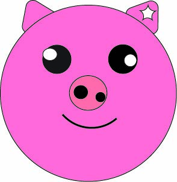
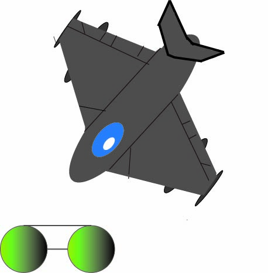

Logo Image
This image above shows my initals in a logo. I chose this image because it shows something senti-mental to me.
The Illustrator tools i used is the circle tool, the text box tool, and star tool making it appear as it is peircing the circle.
Pig Image

I Chose this image of the Pig as I feel suits the prompt of drawing an animal. As everyone can recognize this image.
The tools i used in this image help make the ears and the tag wound through the ear using the star and triangle shape tool. I also used the shift + the circle tool to make it perfectly symmetical.
Topgun Image

I chose this Topgun image because it shows my skills in Illustrator. I thought Topgun would be a good choice as it is a very popular movie from the 80's. And holds a special place in everyones heart.
I used proper paintbrush tool, perfect allignment through the wings, and mirror tool to help bring the symmetry come alive.
Falcon Image
In this image, shows my favorite image, This shows a falcon diving down with a Christmas hat on and festive lines as he is going over 100 miles per hour.
I used the Blob- paintbrush tool to add in the festive line colors, and for the hat i used the pencil tool to outline and then finished with the blob-paintbrush tool.